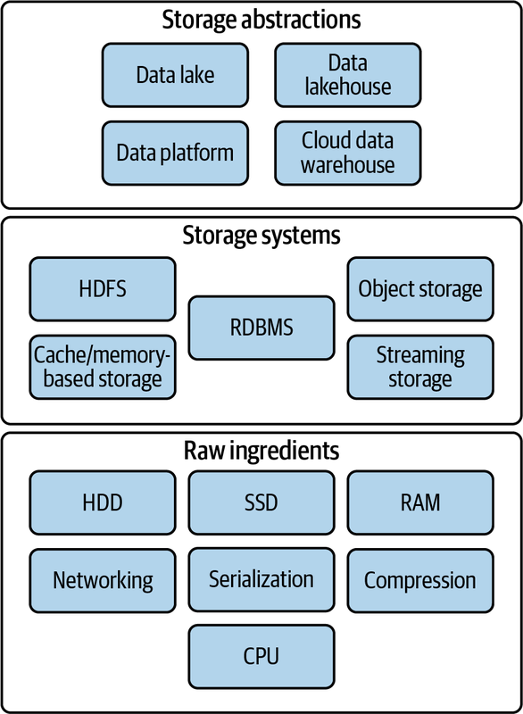
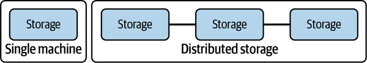

Filesystems
Raw ingredients of storage systems
- Disk drives (magnetic HDDs or SSDs)
- RAM
- Networking and CPU
- Serialization
- Compression
- Caching

Reis, J., Housley, M. (2022). Fundamentals of Data Engineering. United States: O’Reilly Media.
Single machine vs. distributed storage

Single machine
- They are commonly used for storing operating system files, application files, and user data files.
- Filesystems are also used in databases to store data files, transaction logs, and backups.
Distributed storage
- A distributed filesystem is a type of filesystem that spans multiple computers.
- It provides a unified view of files across all the computers in the system.
- Have existed before cloud
Reis, J., Housley, M. (2022). Fundamentals of Data Engineering. United States: O’Reilly Media.
File Storage
A file is a data entity with specific read, write, and reference characteristics used by software and operating systems.
Local disk
- Operating system–managed filesystems on local disk partition of SSD or magnetic disk:
- NTFS (Windows)
- HFS+ (MacOS)
- ext4 (Linux)() on a local disk partition of SSD or magnetic disk
Network-attached (NAS)
- File storage system to clients over a network
- Including redundancy and reliability, fine-grained control of resources, storage pooling across multiple disks for large virtual volumes, and file sharing across multiple machines
Cloud filesystems
- Not object store (more on that later)
- Not the virtual hard drive attached to a virtual machine
- Fully managed filesystem which takes care of networking, managing disk clusters, failures, and configuration (Azure Files, Amazon Elastic Filesystem)
- Backed by Object Store
Reis, J., Housley, M. (2022). Fundamentals of Data Engineering. United States: O’Reilly Media.
Object stores
The term object storage is somewhat confusing because object has several meanings in computer science. In this context, we’re talking about a specialized file-like construct. It could be any type of file: TXT, CSV, JSON, images, videos, audio, or pretty much any type of file.


- Contains objects of all shapes and sizes.
- Every object gets a unique identifier
- Objects are immutable; cannot be modifier in place (unlike local FS)
- Distributed by design
- Massively scalable REST API access
Distributed FS vs Object Store
| Distributed File System | Object Storage | |
|---|---|---|
| Organization | Files in hierarchical directories | Flat organization (though there can be overlays to provide hierarchical files structure) |
| Method | POSIX File Operations | REST API |
| Immutability | None: Random writes anywhere in file | Immutable: need to replace/append entire object |
| Scalability | Millions of files | Billions of objects |
Both provide:
- Fault tolerance
- Availability and consistency
Before: Data locality (for Hadoop)

White, T. E. (2015). Hadoop: The Definitive Guide, 4th Edition. United States: O’Reilly Media, Incorporated.
Today: de-coupling storage from compute

Gopalan, R. (2022). The Cloud Data Lake. United States: O’Reilly Media.
Data on-disk formats
Plain Text (CSV, TDF, FWF)

- Pay attention to encodings!
- Lines end in linefeed, carriage-return, or both together depending on the OS that generated
- Typically, a single line of text contains a single record
JSON
JSON files have two flavors: JSON Lines vs. JSON. Typically when we say data is in JSON format, we imply it’s JSON Lines which means that there is a single JSON object per line, and there are multiple lines.
JSON Lines
Four records, one per line. No ending comma.
{"id":1, "name":"marck", "last_name":"vaisman"}
{"id":2, "name":"anderson", "last_name":"monken"}
{"id":3, "name":"amit", "last_name":"arora"}
{"id":4, "name":"abhijit", "last_name":"dasgupta"}JSON
Four records enclosed in a JSON Array
[
{"id":1, "name":"marck", "last_name":"vaisman"},
{"id":2, "name":"anderson", "last_name":"monken"},
{"id":3, "name":"amit", "last_name":"arora"},
{"id":4, "name":"abhijit", "last_name":"dasgupta"},
]Binary files

Issues with common file formats, particularly CSVs:
- Still ubiquitous and highly error prone (even in 2023)
- The default delimiter is also one of the most familiar characters in the English language—the comma
- Not a uniform format
- Delimiter (comma, tab, semi-colon, custom)
- Quote characters (single or doble quote)
- Escaping to appropriately handle string data
- Doesn’t natively encode schema information
- No direct support for nested structures
- Encoding and schema information must be configured in the target system to ensure appropriate ingestion
- Autodetection is a convenience feature provided in many cloud environments but is inappropriate for production ingestion, and can be painfully slow
- Data engineers are often forced to work with CSV data and then build robust exception handling and error detection to ensure data quality on ingestion
Introducing Apache Parquet
Apache Parquet
- Free and open-source column-oriented data storage format
- Created by Twitter and Cloudera
- v1.0 released in July, 2013
- Stores data in a columnar format (as opposed to row format) and is designed to realize excellent read and write performance
- Parquet-encoded data builds in schema information and natively supports nested data
- Parquet is portable
- Has become the standard for modern data warehouses and big data tools
- Supported by R and Python through Apache Arrow (more on that coming up!)
Traditional row-store


Say you wanted to answer the question “How many balls did we sell?, the engine must scan each and every row until the end!
Column-store

Row groups
Data is stored in row groups!
Only the required fields
Metadata, compression, and dictionary encoding


Apache Arrow for in-memory
Apache Arrow is a development platform for in-memory analytics. It contains a set of technologies that enable big data systems to process and move data fast. It specifies a standardized language-independent columnar memory format for flat and hierarchical data, organized for efficient analytic operations on modern hardware.
Topol, M., McKinney, W. (2022). In-Memory Analytics with Apache Arrow: Perform Fast and Efficient Data Analytics on Both Flat and Hierarchical Structured Data. United Kingdom: Packt Publishing.
Before Arrow

Topol, M., McKinney, W. (2022). In-Memory Analytics with Apache Arrow: Perform Fast and Efficient Data Analytics on Both Flat and Hierarchical Structured Data. United Kingdom: Packt Publishing.
After Arrow

Topol, M., McKinney, W. (2022). In-Memory Analytics with Apache Arrow: Perform Fast and Efficient Data Analytics on Both Flat and Hierarchical Structured Data. United Kingdom: Packt Publishing.
Arrow Compatibility

Topol, M., McKinney, W. (2022). In-Memory Analytics with Apache Arrow: Perform Fast and Efficient Data Analytics on Both Flat and Hierarchical Structured Data. United Kingdom: Packt Publishing.
Arrow Performance


Topol, M., McKinney, W. (2022). In-Memory Analytics with Apache Arrow: Perform Fast and Efficient Data Analytics on Both Flat and Hierarchical Structured Data. United Kingdom: Packt Publishing.
Use Arrow to read/write CSVs and Parquet
Python
Use the pyarrow library or straight from pandas
import pandas as pd
pd.read_csv(engine = 'pyarrow')
pd.read_parquet
import pyarrow.csv
pyarrow.csv.read_csv()
import pyarrow.parquet
pyarrow.parquet.read_table()R
Use the arrow package
library(arrow)
read_csv_arrow()
read_parquet()
read_json_arrow()
write_csv_arrow()
write_parquet()Recommendation: save your intermediate and analytical datasets as Parquet!